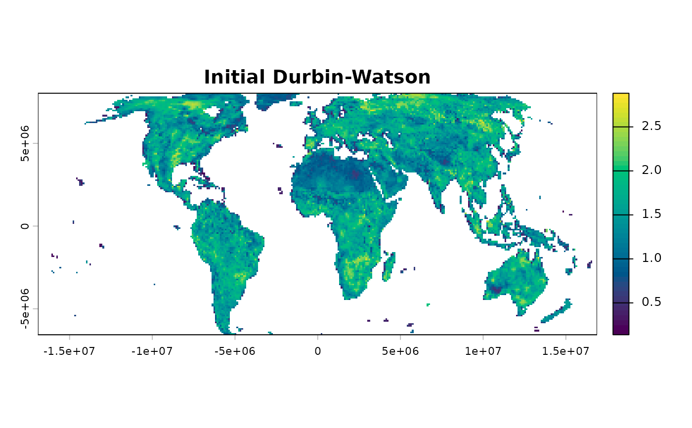
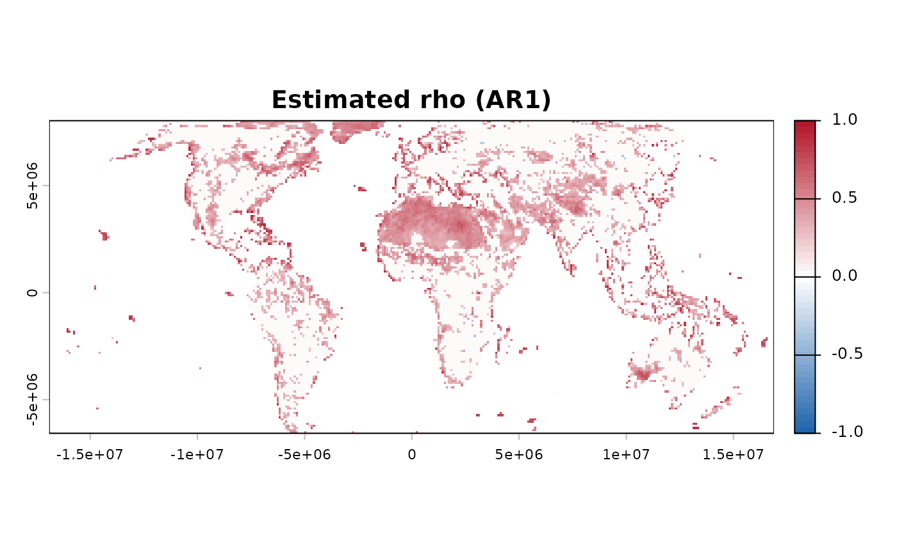
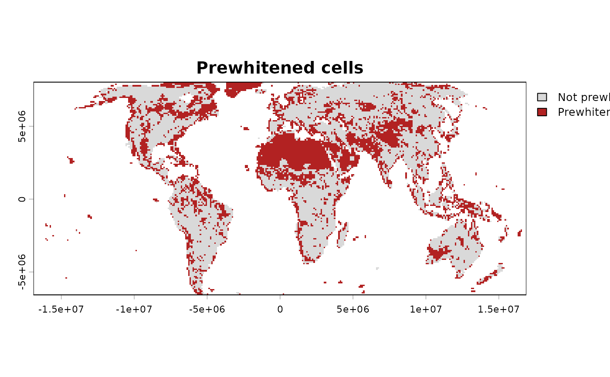
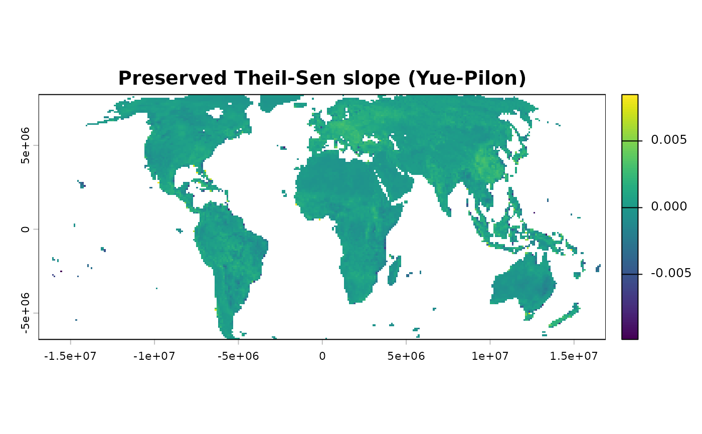

Removes temporal (serial) autocorrelation from each cell's time
series while preserving its linear trend, using one of four published
methods (see the method argument below for the choice). The
default, "TFPW_WS": for each cell, fit an OLS trend, compute
the Durbin-Watson statistic of the residuals, and – only for
cells where DW indicates relevant serial autocorrelation –
iteratively estimate the AR(1) coefficient rho and apply a
trend-preserving transformation (with a Prais-Winsten correction
for the first observation). Cells that pass the DW check are left
untouched.
Arguments
- x
A
terra::SpatRaster; each layer is one time step, in increasing chronological order.- method
Which prewhitening method to use, sharing one interface between four related procedures (see "Methodological details" below for the full comparison and citations).
"TFPW_WS"(default; TFPW-WS, also seen as "Wang-Swail prewhitening" in the literature):Description: the selective AR(1) prewhitening described above, gated by a Durbin-Watson diagnostic.
Characteristics: only cells that need it get modified;
rhois estimated on the raw trend residuals.Advantage: avoids the power loss of prewhitening cells that already behave like white noise (see "Statistical rationale" above).
"TFPW_Y"(TFPW-Y, also seen simply as "TFPW" – this is the best-known formulation of trend-free prewhitening in the literature):Description: trend-free pre-whitening (Yue, Pilon, Cavadias, 2002).
Characteristics: estimates a Theil-Sen slope per cell first, removes it, estimates lag-1 autocorrelation on the detrended residuals (not the raw series, which would over-estimate rho when a real trend is present), prewhitens those residuals, and adds the slope back; every valid cell is processed unconditionally, there is no DW gate.
Advantage: a single, simple rule applied uniformly, with no threshold or test choice to make.
"TFPW_Z"(TFPW-Z here – not a universally established acronym in the literature the way the others are, so defined explicitly wherever used):Description: Zhang, Vincent, Hogg and Niitsoo (2000), as later refined into
TFPW_WSabove – this method is the earlier, unrefined form the same iterative mechanism (see "Implementation notes" above) is traced against and mirrors.Characteristics: identical iteration to
TFPW_WS, but with no Durbin-Watson gate – every valid cell is processed unconditionally, matchingzyp::zyp.TFPW_Z()'s own published behaviour.Advantage: no gating decision to make, at the same cost
TFPW_Yhas for the same reason.
"VCTFPW"(VCTFPW):Description: variance-corrected trend-free prewhitening (Wang, Chen, Becker and Liu, 2015).
Characteristics: removes a Sen slope, estimates lag-1 autocorrelation on the detrended residuals and applies the published transformation only where that autocorrelation is significant at the two-sided 95% level. It then applies the published variance-ratio correction and corrects the restored slope for positive autocorrelation. Cells that do not cross the gate retain their original series.
Advantage: addresses a specific, published criticism of simpler trend-free methods – their own reduced variance biases the slope and its significance – at the cost of a substantially more involved procedure.
Comparison:
TFPW_WSuses a Durbin-Watson gate,TFPW_ZandTFPW_Yprocess every valid cell unconditionally, andVCTFPWuses its published 95% lag-1-autocorrelation gate before applying its variance and slope corrections. See "Methodological details" above for the full citations and practical implications of each.- t
Numeric vector of time points, one per layer. Defaults to
1:nlyr(x). Irregular spacing is supported, but values must be finite, unique and strictly increasing.- dw_low, dw_high
Only used when
method = "TFPW_WS". Fixed Durbin-Watson gate thresholds, used only whendw_method = "threshold".- dw_method
Only used when
method = "TFPW_WS"."threshold"(default): use the fixeddw_low/dw_highcutoffs."test": use the formal Durbin-Watson test with critical values (dL, dU) tabulated for the actual sample size, at the 5% level.- dw_inconclusive
Only used when
method = "TFPW_WS"anddw_method = "test". The classic DW test has an inconclusive zone (dL <= DW <= dU) where it cannot decide – this is not the same as "autocorrelation present"."conservative"(default) prewhitens that zone too (favours not leaving autocorrelation uncorrected);"power"prewhitens only when the test actually rejects H0 (DW < dL), favouring statistical power downstream. Neither is "the correct" choice in absolute terms.- eps
Only used when
method = "TFPW_WS"or"TFPW_Z". Convergence threshold for the iterative estimation ofrho.- itmax
Only used when
method = "TFPW_WS"or"TFPW_Z". Maximum number of iterations. TerrSet's own Earth Trends Modeler, which implements this same method, caps this at 5 "to avoid the rare cases that fail to converge" (its own documentation's wording) –sptrendsuses a higher default (20) instead, relying onClamped(see "Value" below) to flag a cell whose own iteration did not settle within that budget, rather than capping the budget itself as tightly as TerrSet does.- refit_method
Only used when
method = "TFPW_WS"or"TFPW_Z". Which slope estimator re-fits the trend at each iteration, before removing it to isolate the residual autocorrelation for the nextrhoestimate:"OLS"(default, matching this function's own behaviour in earlier package versions) or"TS"(Theil-Sen, matching the original iterative procedure as multiple independent sources describe Wang and Swail (2001) actually publishing it – see "Implementation notes" below for the specific evidence and why the default was not simply changed to match it outright)."TS"'s own robustness to outliers can matter specifically for a cell whose iteration is already unstable (seeClampedbelow): an extreme value in one iteration's own transformed series distorts an"OLS"refit more than a"TS"one, which can itself feed into a worserhoestimate the following iteration. Comparing both directly on a specificClamped = 1cell, the same way comparingTFPW_WSagainstTFPW_Yis already recommended for that case (see "Value" below), is worth doing before trusting either estimate in isolation.- report
Logical. If
TRUE(default), automatically print a summary and draw diagnostic histograms and maps after computing (which functions, exactly, depends onmethod– see "Value" below). Set toFALSEfor programmatic use (e.g. inside a loop, or when called fromworkflow_tst()) where you don't want console output or plots as a side effect.- verbose
Logical. Print progress messages and elapsed time.
Value
Returns a list of class "prewhiten", with:
- series
A
SpatRaster. Formethod = "TFPW_WS": same structure asx, with prewhitened cells replaced and the rest unchanged; layer names get a"_prewhitened"suffix. Formethod = "TFPW_Y": one fewer layer thanx(the classic Yue-Pilon transform loses the first time step to lag-1 differencing); every valid cell is prewhitened, with its Theil-Sen trend preserved; layer names come fromx's own layers 2 through n, with a"_prewhitened"suffix. Formethod = "TFPW_Z": the same number of layers asx; every valid cell enters the same iterative transformation used byTFPW_WS, but without the Durbin-Watson gate. Formethod = "VCTFPW": the same number of layers asx; significantly autocorrelated cells contain the published VCTFPW transformation and other valid cells remain unchanged.- diagnostics
A
SpatRaster. Formethod = "TFPW_WS": 4 layers,DW_initial,Rho,Modified(0/1), andClamped(0/1) –Clampedis1for a gated cell whose iterativerhoestimate hit the +-1 stability bound (see "Implementation notes" below) at any point during the iteration, even if a later iteration's ownrho - rho_olddifference happened to fall underepsimmediately afterwards, since aRhoreaching that bound reflects the bound itself, not necessarily a precise, well-converged estimate. A clamped cell is deliberately left uncorrected (serieskeeps its original observed values there,Modifiedis0for it) rather than transformed using that unreliablerho: the correction divides by(1 - rho), so atrho = 0.99the residuals would be multiplied by 100 – an extreme, disproportionate transform for what was, underneath, an unstable rather than a trustworthy estimate.Rhostill records the clamped value itself, so the reason a cell went uncorrected remains visible in the diagnostics rather than indistinguishable from a cell that never needed correcting in the first place. Reachable viasummary()/plot()asprewhiten_summary()/prewhiten_histograms()/prewhiten_maps(). Formethod = "TFPW_Y": 2 layers,Beta_TheilSen(the slope removed and restored) andRho(lag-1 autocorrelation of the detrended residuals); reachable via internal reporting functions specific to this method, not theTFPW_WSones above (their structure differs – there is no DW gate,Modified, orClampedfield forTFPW_Y, which does not iterate to estimaterhoand so cannot hit this same failure mode – precisely why comparing both methods on the same data is worth doing for a cell flaggedClamped = 1, rather than trusting either one in isolation: agreement between them is reassuring, and disagreement is itself informative about how sensitive that cell's own result is to the prewhitening method chosen.). Formethod = "TFPW_Z": the same 4 layers asTFPW_WS, butDW_initialisNAbecause this method has no Durbin-Watson gate; every valid cell enters the iteration, whileModifiedandClampedretain the meanings described above. Formethod = "VCTFPW": 3 layers,Rho(lag-1 autocorrelation of the detrended series),Beta_corrected, andModified(0/1, indicating whether the 95% autocorrelation gate was crossed).- method
The selected method, recorded as one of
"TFPW_WS","TFPW_Y","TFPW_Z", or"VCTFPW".
Details
Function type: Preprocessing function – prepares the raw
raster time series before trend estimation or significance testing
(see compute_anomalies() for the other preprocessing step this
package offers). Not one of the core trend-analysis pillars itself.
This function typically precedes trend estimation (trend_test())
and slope estimation (slope_estimator()) within the standard
sptrends workflow.
Typical use
This function is the preprocessing step between reading data and
testing it for a trend:
read_ordered_stack()/read_netcdf_stack() -> compute_anomalies()
(optional) -> prewhiten() -> trend_test() -> slope_estimator()
-> fdr_correction(). workflow_tst() runs this whole chain in one
call.
raster time series
|
prewhiten()
|
transformed time series (`result$series`) + diagnostics
|
trend_test() and slope_estimator()If the input has a seasonal cycle, remove it first with
compute_anomalies(). Pass result$series to later stages; the
original input object is not modified and remains available under
the name supplied by the caller.
Methodological details
Methods and method selection
Wang & Swail (2001),
method = "TFPW_WS": trend-free prewhitening (a Prais-Winsten-style correction that preserves the linear trend, unlike simple differencing).Yue, Pilon & Cavadias (2002),
method = "TFPW_Y": also a trend-preserving prewhitening method, but a different mechanism:rhois estimated on the detrended residuals directly, every valid cell is processed unconditionally (no DW-based gate), and the classic transform loses the first time step. See themethodargument below for the practical difference this makes to the output.Zhang et al. (2000),
method = "TFPW_Z": uses the same iterative mechanism asTFPW_WS, but applies it to every valid cell without a Durbin-Watson gate.Wang et al. (2015),
method = "VCTFPW": applies the published variance and slope corrections only where lag-1 autocorrelation crosses its two-sided 95% gate.Main references: Wang & Swail (2001) for the
TFPW_WStransformation itself; Durbin & Watson (1950, 1951) for the statistic used as its selective gate; Yue & Wang (2002) for why gating selectively, rather than prewhitening every cell, matters forTFPW_WSspecifically; Yue, Pilon & Cavadias (2002) forTFPW_Y; Zhang et al. (2000) forTFPW_Z; and Wang et al. (2015) forVCTFPW. Full citations appear under "References" below.Typical applications: hydrology and climatology time series with suspected serial autocorrelation, applied before a Mann-Kendall-family trend test to avoid inflating its false positive rate.
Classical prewhitening is deliberately not provided as a fifth method because filtering the observed series directly can remove or attenuate part of the trend and reduce the power of the subsequent test. The four implemented procedures explicitly preserve or restore the trend, or otherwise correct the transformation.
How it works
Prewhitening every cell indiscriminately (including cells that already behave like white noise) reduces the statistical power of any trend test applied afterwards (Yue, Pilon & Cavadias, 2002); hence the selective gate.
The method preserves the linear trend, unlike simple differencing,
by solving Y_t = a + b*t + X_t with X_t = rho * X_(t-1) + e_t
for W_t = (Y_t - rho * Y_(t-1)) / (1 - rho) (Wang & Swail, 2001,
"trend-free prewhitening").
This selective, DW-gated approach to prewhitening follows the same overall methodology as the Earth Trends Modeler (ETM) module of TerrSet (Clark Labs) – an independent implementation, not a port of that software's code.
Implementation notes
On the core iterative mechanism: this function's own iteration
was substantially rewritten in this version to mirror
zyp::zyp.TFPW_Z()'s own mechanics, after empirically comparing this
function's own rho estimate against two independent
implementations of essentially the same published method (zyp's
"TFPW_Z", and MannKendallTrends's nanprewhite.AR()/prewhite())
on a real near-unit-root cell: this function's own earlier iteration
hit the +-1 stability clamp (0.99), while zyp converged to
0.776 and MannKendallTrends to 0.860 – both substantially more
moderate, and reasonably close to each other despite differing
implementations. Tracing both algorithms step by step on the
identical series (see NEWS.md for the specific numbers at each
iteration) found two mechanical differences, both now adopted:
first, each iteration measures lag-1 autocorrelation on the raw
series detrended by the latest slope estimate, never on a running
transformed series – so what changes between iterations is only
which slope estimate is used to detrend the same raw data, not the
data being detrended itself; second, the very first estimate, before
any detrending, is the raw series' own lag-1 autocorrelation
directly, matching zyp's own initial step, rather than the
residuals of an initial trend fit (which, on a near-unit-root
series, can themselves carry more apparent autocorrelation than
the raw series did, pushing the very first estimate toward the
clamp before any subsequent iteration gets a chance to recover from
it).
On refit_method and the evidence behind its default: TerrSet's
own Earth Trends Modeler documentation for this method states only
that its iteration is "determined exactly as described by Wang and
Swail (2001)", without specifying which slope estimator that
refitting step itself uses – this function's own primary source does
not settle the question directly. Independently, several papers
describing the original Wang and Swail (2001) procedure in more
methodological detail (including Zhang and Zwiers (2004), a direct
comment on this literature, and Collaud Coen et al. (2020)) describe
its own iterative refit as using the Sen slope specifically, and
MannKendallTrends's own prewhite() source, inspected directly,
confirms this: every refit inside its own TFPW.WS branch calls its
package's own sen.slope(), never an OLS fit. Zhang and Zwiers
(2004) describe substituting an OLS refit as their own added variant
for comparison, not as what Wang and Swail (2001) themselves used.
This function's own default (refit_method = "OLS") was kept
despite this evidence, both because the primary source available to
this package does not confirm it directly, and because "OLS" was
this function's own behaviour in earlier package versions – with
the outer iteration mechanism now unified between the two values
(see above), the choice of refit estimator itself is a materially
smaller effect than it was before that rewrite; "TS" remains
available for a user who prefers it or wants to compare both
directly, as recommended above for a Clamped = 1 cell specifically.
Computational considerations
On TerrSet's own iteration cap: TerrSet's documentation states
its own maximum of 5 iterations "to avoid the rare cases that fail
to converge" – tested directly against a real near-unit-root cell
under this function's own earlier iteration, raising itmax from 20
to 100 left the estimate unchanged (still at the clamp), showing the
earlier instability was a genuine fixed point of that iteration, not
merely an iteration budget cut short – so itmax was not lowered to
match TerrSet's own cap; this function's default (20) is kept.
TFPW_WS and TFPW_Z are iterative. Within either procedure,
refit_method = "OLS" is computationally lighter than "TS";
Theil-Sen refitting gains robustness at the cost of evaluating many
pairwise slopes. The Theil-Sen steps in TFPW_Y and VCTFPW also
become more expensive as the number of time points increases.
Statistical assumptions
All four methods assume an AR(1) noise process (no higher orders) and an approximately linear trend.
Limitations
This is a purely temporal (per-cell) preprocessing step with no spatial component. Cells with any missing value in the time series are excluded entirely from the output.
method = "TFPW_WS": the "threshold" method uses a
widely-used but non-universal empirical DW cutoff ([1.4, 2.6]);
rho is assumed constant across the whole series.
method = "TFPW_Y": loses one observation to lag-1
differencing; unlike TFPW_WS, has no selective gate, so a cell
with genuinely no autocorrelation still gets a (small) rho
estimated and applied from that specific sample – see
TFPW_WS above for the alternative that only touches cells that
need it.
method = "TFPW_Z": processes every valid cell without a
selective gate. As with TFPW_WS, an iteration that reaches the
stability clamp is reported and that cell is left uncorrected.
method = "VCTFPW": uses the method's published two-sided 95%
lag-1-autocorrelation gate and variance correction. Its slope
correction follows the published positive-autocorrelation rule.
Quality assurance
Automated tests compare the transformed series and diagnostics with
hand-calculated references, verify method-specific gates and
first-year retention, exercise constant/invalid series and boundary
cases, and require identical sequential and parallel results.
Yue-Pilon trend-free prewhitening is additionally compared with
modifiedmk::tfpwmk() for the quantities both implementations define
identically. See ?sptrends for the package-wide release-check
protocol; current check results belong only in cran-comments.md.
References
Primary method reference (method = "TFPW_WS"):
Wang, X.L. and Swail, V.R. (2001) Changes of Extreme Wave Heights in Northern Hemisphere Oceans and Related Atmospheric Circulation Regimes. Journal of Climate, 14(10), 2204-2221.
On the evidence behind refit_method, and the core iterative
mechanism this version's rewrite mirrors (see "Implementation notes"
above): the original iterative method this function's own
method = "TFPW_WS" implements, as refined by Wang and Swail
(2001) from an earlier procedure, and the R package whose own
mechanics this version's rewrite was traced against and now mirrors:
Zhang, X., Vincent, L.A., Hogg, W.D. and Niitsoo, A. (2000) Temperature and precipitation trends in Canada during the 20th century. Atmosphere-Ocean, 38(3), 395-429. doi:10.1080/07055900.2000.9649654
Bronaugh, D. and Werner, A. (2013) zyp: Zhang + Yue-Pilon Trends Package. R package. https://CRAN.R-project.org/package=zyp
Zhang, X. and Zwiers, F.W. (2004) Comment on "Applicability of prewhitening to eliminate the influence of serial correlation on the Mann-Kendall test" by Sheng Yue and Chun Yuan Wang. Water Resources Research, 40(3), W03805. doi:10.1029/2003WR002073
Collaud Coen, M., Andrews, E., Bigi, A., Martucci, G., Romanens, G., Vogt, F.P.A. and Vuilleumier, L. (2020) Effects of the prewhitening method, the time granularity, and the time segmentation on the Mann-Kendall trend detection and the associated Sen's slope. Atmospheric Measurement Techniques, 13(12), 6945-6964. doi:10.5194/amt-13-6945-2020
Primary method reference (method = "TFPW_Y"):
Yue, S., Pilon, P., Phinney, B. and Cavadias, G. (2002) The influence of autocorrelation on the ability to detect trend in hydrological series. Hydrological Processes, 16(9), 1807-1829. doi:10.1002/hyp.1095
(Corrected from an earlier, different Yue, Pilon and Cavadias (2002)
paper this citation previously pointed to – Power of the
Mann-Kendall and Spearman's rho tests for detecting monotonic
trends in hydrological series, Journal of Hydrology 259, a related
but distinct paper by essentially the same authors, published the
same year, that does not itself specify the TFPW procedure. Found
by tracing which paper zyp's own documentation and the
mannkendall project's own "Spirit of mannkendall" reference for
this same method – both cite the paper now cited here.)
Primary method reference (method = "VCTFPW"):
Wang, W., Chen, Y., Becker, S. and Liu, B. (2015) Variance Correction Prewhitening Method for Trend Detection in Autocorrelated Data. Journal of Hydrologic Engineering, 20(12), 04015033. doi:10.1061/(ASCE)HE.1943-5584.0001234
VCTFPW's own implementation here was adapted from the logic of
(not copied verbatim from – see "Implementation notes" above for
this package's own vectorised helpers used instead) the R package
whose scientific article is already cited above for refit_method:
Collaud Coen, M., Andrews, E., Bigi, A., Martucci, G., Romanens, G., Vogt, F.P.A. and Vuilleumier, L. (2020) Effects of the prewhitening method, the time granularity, and the time segmentation on the Mann-Kendall trend detection and the associated Sen's slope. Atmospheric Measurement Techniques, 13(12), 6945-6964. doi:10.5194/amt-13-6945-2020
Source of the Durbin-Watson statistic used as the selective gate
(method = "TFPW_WS" only):
Durbin, J. and Watson, G.S. (1950) Testing for Serial Correlation in Least Squares Regression, I. Biometrika, 37(3-4), 409-428. doi:10.1093/biomet/37.3-4.409
Durbin, J. and Watson, G.S. (1951) Testing for Serial Correlation in Least Squares Regression, II. Biometrika, 38(1-2), 159-178. doi:10.1093/biomet/38.1-2.159
Basis for gating prewhitening selectively rather than applying it to every cell (see "Methodological details" above):
Yue, S. and Wang, C.Y. (2002) Applicability of prewhitening to eliminate the influence of serial correlation on the Mann-Kendall test. Water Resources Research, 38(6), 4-1. doi:10.1029/2001WR000861
Official software implementation (independent re-implementation of the published method, not a port of this module's code):
Eastman, J.R. (2016) TerrSet Geospatial Monitoring and Modeling System: Earth Trends Modeler. Clark Labs, Clark University, Worcester, MA.
This function is used (not authored) by the following study:
Gutiérrez-Hernández, O. and García, L.V. (2025) Uncovering true significant trends in global greening. Remote Sensing Applications: Society and Environment, 37, 101377. doi:10.1016/j.rsase.2024.101377
See also
Other Prewhitening functions:
prewhiten_histograms(),
prewhiten_maps(),
prewhiten_summary()
Examples
# \donttest{
# Annual mean NDVI from the bundled environmental dataset.
r <- read_ordered_stack(example_data("vhp_ndvi"))
#> Temporal order auto-detected with pattern '(19[0-9]{2}|20[0-9]{2})'.
#> Temporal order verification (mandatory, cannot be skipped):
#> stack_position detected_number file
#> 1 1982 VHP_SMN_annual_ndvi_1982.tif
#> 2 1983 VHP_SMN_annual_ndvi_1983.tif
#> 3 1984 VHP_SMN_annual_ndvi_1984.tif
#> 4 1985 VHP_SMN_annual_ndvi_1985.tif
#> 5 1986 VHP_SMN_annual_ndvi_1986.tif
#> 6 1987 VHP_SMN_annual_ndvi_1987.tif
#> 7 1988 VHP_SMN_annual_ndvi_1988.tif
#> 8 1989 VHP_SMN_annual_ndvi_1989.tif
#> 9 1990 VHP_SMN_annual_ndvi_1990.tif
#> 10 1991 VHP_SMN_annual_ndvi_1991.tif
#> 11 1992 VHP_SMN_annual_ndvi_1992.tif
#> 12 1993 VHP_SMN_annual_ndvi_1993.tif
#> 13 1994 VHP_SMN_annual_ndvi_1994.tif
#> 14 1995 VHP_SMN_annual_ndvi_1995.tif
#> 15 1996 VHP_SMN_annual_ndvi_1996.tif
#> 16 1997 VHP_SMN_annual_ndvi_1997.tif
#> 17 1998 VHP_SMN_annual_ndvi_1998.tif
#> 18 1999 VHP_SMN_annual_ndvi_1999.tif
#> 19 2000 VHP_SMN_annual_ndvi_2000.tif
#> 20 2001 VHP_SMN_annual_ndvi_2001.tif
#> 21 2002 VHP_SMN_annual_ndvi_2002.tif
#> 22 2003 VHP_SMN_annual_ndvi_2003.tif
#> 23 2004 VHP_SMN_annual_ndvi_2004.tif
#> 24 2005 VHP_SMN_annual_ndvi_2005.tif
#> 25 2006 VHP_SMN_annual_ndvi_2006.tif
#> 26 2007 VHP_SMN_annual_ndvi_2007.tif
#> 27 2008 VHP_SMN_annual_ndvi_2008.tif
#> 28 2009 VHP_SMN_annual_ndvi_2009.tif
#> 29 2010 VHP_SMN_annual_ndvi_2010.tif
#> 30 2011 VHP_SMN_annual_ndvi_2011.tif
#> 31 2012 VHP_SMN_annual_ndvi_2012.tif
#> 32 2013 VHP_SMN_annual_ndvi_2013.tif
#> 33 2014 VHP_SMN_annual_ndvi_2014.tif
#> 34 2015 VHP_SMN_annual_ndvi_2015.tif
#> 35 2016 VHP_SMN_annual_ndvi_2016.tif
#> 36 2017 VHP_SMN_annual_ndvi_2017.tif
#> 37 2018 VHP_SMN_annual_ndvi_2018.tif
#> 38 2019 VHP_SMN_annual_ndvi_2019.tif
#> 39 2020 VHP_SMN_annual_ndvi_2020.tif
#> 40 2021 VHP_SMN_annual_ndvi_2021.tif
#> 41 2022 VHP_SMN_annual_ndvi_2022.tif
#> 42 2023 VHP_SMN_annual_ndvi_2023.tif
 #> Stack built: 42 layers, 146 x 338 cells.
#> >> [read_ordered_stack()] elapsed: 0.09 s
# Remove serial autocorrelation before testing for a trend -- only
# cells that actually show relevant autocorrelation are modified;
# the rest pass through unchanged.
result <- prewhiten(r, report = FALSE, verbose = FALSE)
# result$series is the prewhitened stack, same number of layers as the
# input -- feed this into trend_test()/slope_estimator()
# next, not the raw r.
terra::nlyr(result$series)
#> [1] 42
summary(result)
#> Valid cells: 15675
#> Prewhitened: 5987 (38.2%)
#> Mean rho among prewhitened cells: 0.4493
#> Median Durbin-Watson (all valid cells): 1.5306
plot(result) # Rho map and the DW-before/after comparison, real data
#> Stack built: 42 layers, 146 x 338 cells.
#> >> [read_ordered_stack()] elapsed: 0.09 s
# Remove serial autocorrelation before testing for a trend -- only
# cells that actually show relevant autocorrelation are modified;
# the rest pass through unchanged.
result <- prewhiten(r, report = FALSE, verbose = FALSE)
# result$series is the prewhitened stack, same number of layers as the
# input -- feed this into trend_test()/slope_estimator()
# next, not the raw r.
terra::nlyr(result$series)
#> [1] 42
summary(result)
#> Valid cells: 15675
#> Prewhitened: 5987 (38.2%)
#> Mean rho among prewhitened cells: 0.4493
#> Median Durbin-Watson (all valid cells): 1.5306
plot(result) # Rho map and the DW-before/after comparison, real data



# Trend-free pre-whitening (Yue-Pilon): every valid cell is
# processed, its Theil-Sen trend preserved -- result_yp$series has
# one fewer layer than r (the classic transform loses the first
# time step to lag-1 differencing).
result_yp <- prewhiten(r, method = "TFPW_Y", report = FALSE,
verbose = FALSE)
terra::nlyr(result_yp$series)
#> [1] 41
terra::plot(result_yp$diagnostics$Beta_TheilSen,
main = "Preserved Theil-Sen slope (Yue-Pilon)")

# }